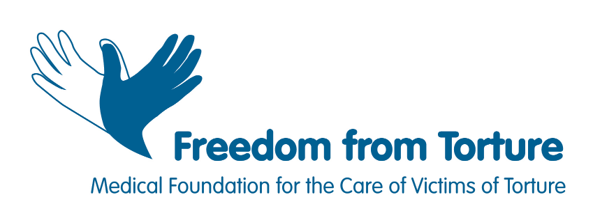
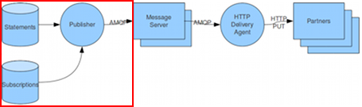
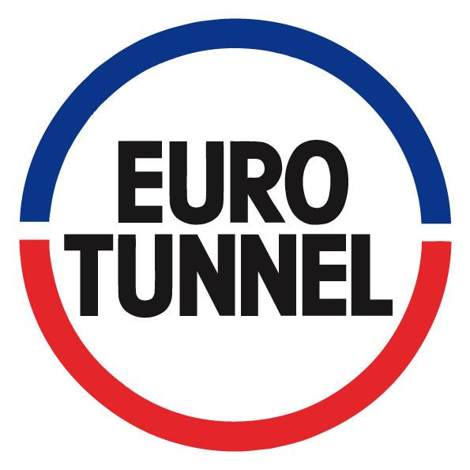
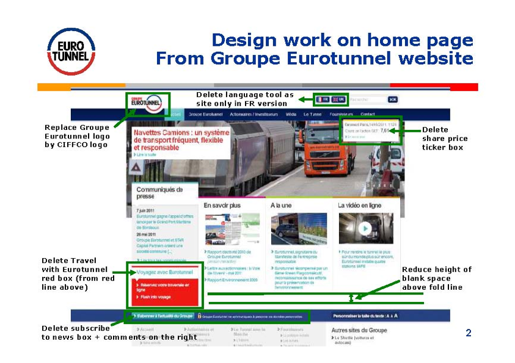
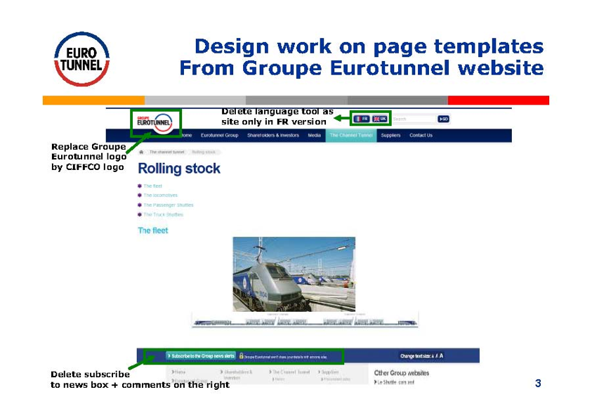
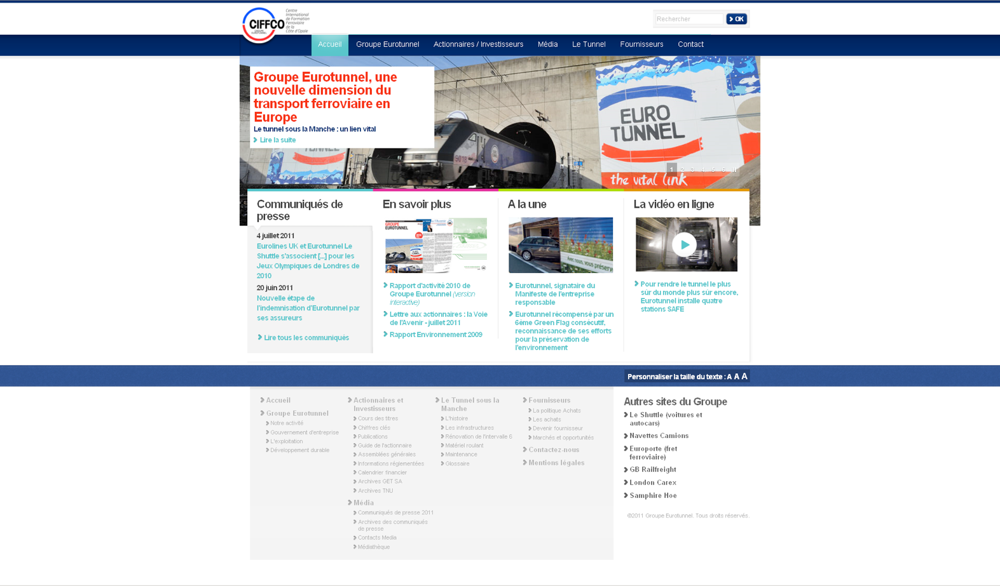
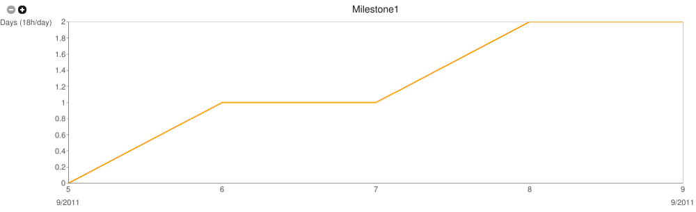
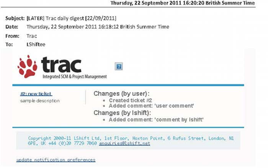
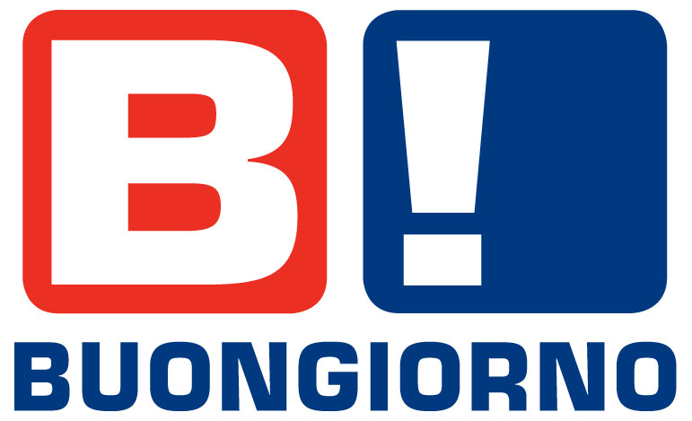
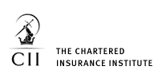

Agenda
- Introduction
- Projects
- Project Daylight
- DIAAS
- CIFFCO website
- Trac plugins
- Buongiorno
- ABR Gapfill verification tool
- Conclusion
Introduction
define:LShift
- small hi-tech software development company
- some of the best UK developers
- creative work environment
-
- now recruiting!
Project Daylight

- goal: clinical and legal information system
- description: C#/ASP.net MVC web application hosted on IIS
Project Daylight > involvement
- end of Phase 3 milestone
- assigned task
- QA - functional unit testing via Selenium
- problem: tests not future-proof nor sufficiently robust
- solution: initially use XPath & variables, later port Selenium to C#
- problem: user experience not ideal
- solution: improved by fixing inconsistencies & other usability issues
DIAAS
- Data Integration and Analysis Applications and Services
- goal:
- secure, automated mechanism
- for transferring bank account statements
- to accounting partners
- description:
- authorisation via web portal
- encrypted statement transport
- RabbitMQ messaging infrastructure
- target deployment on RHEL
DIAAS > involvement

- problem: sensitive data
- solution: Mock data (my contribution), cryptographic library, UAT
- problem: RHEL is commercial
- solution: deploy as RPMs on CentOS VM (my contribution), UAT
DIAAS > involvement
- problem: expected high volume daily traffic
- solution: RabbitMQ
- problem: web portal required for authorisation
- solution: initially my tomcat webapp, later Magnolia CMS
CIFFCO website

- Centre International de Formation Ferroviaire de la Côte d’Opale
- goal:
- modify website design templates and smart forms
- from Eurotunnel's live 'Corporate' site
- using Ektron Content Management System (CMS)
CIFFCO website > involvement
Before


CIFFCO website > involvement
After

Trac plugins

- goal: 2 plugins
- Burndown Chart

- Email Digest

Trac plugins > Burndown Chart
- define:Burndown Chart
- chart to visualise progress in a milestone
- assigned task
- enhance existing BurndownChart component
- objectives
- allow historical recording of time spent
- allow input / reporting in hours / days for client reporting purposes
Trac plugins > Email digest
- current state
- one email per change in Trac tickets
- assigned task
- multiple changes per email
- important ones sent individually
- user can configure own settings
Buongiorno

Italian mobile content provider
- goal:
- Japanese language detection
- keyword extraction
- assigned task
- scrape & process data from:
- Wikipedia
- Twitter
- RSS news feeds
ABR Gapfill verification tool

- goal: certification for Financial Service Advisors
- description: C#/ASP.net MVC web application hosted on IIS
- assigned task
- console C# tool
- email notification of application outcome & next steps
Conclusion
lessons learnt
- Test driven development
- Debug logging
- Proper documentation
- Code simplicity & correctness
experience gained
- Distributed VCS
- Managing project risks
- Client relationship
- Confidentiality
Questions?